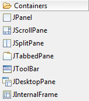
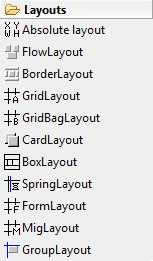
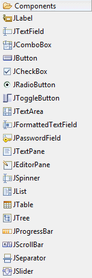
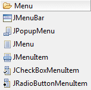
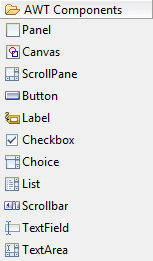

Swing Designer Palette
Swing Designer provides the following palette for creating Swing
applications.
The palette may be fully configured using the
Palette Manager.
|

|
- JPanel - A generic lightweight container.
- JScrollPane
- Provides a scrollable view of a lightweight component. A JScrollPane
manages a viewport, optional vertical and horizontal scroll bars, and
optional row and column heading viewports.
- JSplitPane
- JSplitPane is used to divide two (and only two) Components. The two
Components are graphically divided based on the look and feel
implementation, and the two Components can then be interactively
resized by the user.
- JTabbedPane - A component that lets the user switch between a group of components by clicking on a tab with a given title and/or icon.
- JToolBar - A component that is useful for displaying commonly used Action's or controls.
- JDesktopPane - A container used to create a multiple-document interface or a virtual desktop.
- JInternalFrame
- A lightweight object that provides many of the features of a native
frame, including dragging, closing, becoming an icon, resizing, title
display, and support for a menu bar.
|
|
|

|
- Absolute Layout - A absolute layout displays components with specified bounds.
-
FlowLayout
- A flow layout arranges components in a left-to-right flow, much like
lines of text in a paragraph. Flow layouts are typically used to
arrange buttons in a panel. It will arrange buttons left to right until
no more buttons fit on the same line.
- BorderLayout - A border layout lays out a container, arranging and resizing its
components to fit in five regions: north, south, east, west, and
center. Each region may contain no more than one component.
-
GridLayout
- The GridLayout class is a layout manager that lays out a container's
components in a rectangular grid. The container is divided into
equal-sized rectangles, and one component is placed in each rectangle.
- GridBagLayout
- The GridBagLayout class is a flexible layout manager that aligns
components vertically and horizontally, without requiring that the
components be of the same size. Each GridBagLayout object maintains a
dynamic, rectangular grid of cells, with each component occupying, one
or more cells.
-
CardLayout
- A CardLayout object is a layout manager for a container. It treats
each component in the container as a card. Only one card is visible at
a time, and the container acts as a stack of cards. The first component
added to a CardLayout object is the visible component when the
container is first displayed.
- BoxLayout
- A layout manager that allows multiple components to be laid out
either vertically or horizontally. The components will not wrap so, for
example, a vertical arrangement of components will stay vertically
arranged when the frame is resized.
- FormLayout -
JGoodies
FormLayout is a powerful, flexible and precise general
purpose layout manager. It aligns components vertically and
horizontally in a dynamic rectangular grid of cells, with each
component occupying one or more cells.
- SpringLayout - A SpringLayout lays out the children of its associated container according to a set of constraints for each side.
- GroupLayout - GroupLayout mixes grid layout and free form
layout.
|
|

|
- Horizontal Box - Creates a panel that uses an implicit
horizontal
BoxLayout.
- Vertical Box - Creates a panel that uses an implicit
vertical BoxLayout.
- Horizontal strut - Creates an invisible, fixed-width
component .
- Vertical strut - Creates an invisible, fixed-height
component .
- Horizontal glue - Creates a horizontal glue component .
- Vertical glue - Creates a vertical glue component .
- Rigid area - Creates an invisible component that's always the specified
size .
- Glue - Creates an invisible glue component .
|
|
|

|
- JLabel
- A display area for a short text string or an image, or both. A label
does not react to input events. As a result, it cannot get the keyboard
focus. A label can, however, display a keyboard alternative as a
convenience for a nearby component that has a keyboard alternative but
can't display it.
- JTextField - A lightweight component that allows the editing of a single line of text.
- JComboBox
- A component that combines a button or editable field and a drop-down
list. The user can select a value from the drop-down list, which
appears at the user's request. If you make the combo box editable, then
the combo box includes an editable field into which the user can type a
value.
- JButton - An implementation of a "push" button.
- JCheckBox
- An implementation of a check box -- an item that can be selected or
deselected, and which displays its state to the user. By convention,
any number of check boxes in a group can be selected.
- JRadioButton
- An implementation of a radio button -- an item that can be selected
or deselected, and which displays its state to the user. Used with a
ButtonGroup object to create a group of buttons in which only one
button at a time can be selected.
- JToggleButton
- An implementation of a two-state button -- an item that can be
selected or deselected, and which displays its state to the user.
- JTextArea - A JTextArea is a multi-line area that displays plain text.
- JFormattedTextField - A lightweight component that allows the editing of a single line of text using a predefined mask.
- JPasswordField
- A lightweight component that allows the editing of a single line of
text where the view indicates something was typed, but does not show
the original characters.
- JTextPane - A text component that can be marked up with attributes that are represented graphically.
- JEditorPane - A text component to edit various kinds of content.
- JSpinner - A lightweight component that allows the lets the user select a number or an object value from an ordered sequence.
- JList - A component that allows the user to select one or more objects from a list.
- JTable - The JTable is used to display and edit regular two-dimensional tables of cells.
- JTable on JScrollPane - A JTable placed within a
JScrollPane.
- Table model column - A JTable model column.
- JTree - A control that displays a set of hierarchical data as an outline.
- JProgressBar
- A component that, by default, displays an integer value within a
bounded interval. A progress bar typically communicates the progress of
some work by displaying its percentage of completion and possibly a
textual display of this percentage.
- JScrollBar - An
implementation of a scrollbar. The user positions the knob in the
scrollbar to determine the contents of the viewing area. The program
typically adjusts the display so that the end of the scrollbar
represents the end of the displayable contents, or 100% of the contents.
- JSeparator - A horizontal or vertical line used to separate other controls.
- JSlider
- A component that lets the user graphically select a value by sliding
a knob within a bounded interval. The slider can show both major tick
marks and minor tick marks between them. The number of values between
the tick marks is controlled with setMajorTickSpacing and
setMinorTickSpacing.
|
|
|

|
- JMenuBar - A menu bar.
- JPopupMenu - A popup menu.
- JMenu - Either a pull-down or cascaded menu.
- JMenuItem - A simple menu item.
- JCheckBoxMenuItem - A checkbox menu item.
- JRadioButtonMenuItem - A radio button menu item.
|
|
|

|
- Panel
- Panel is the simplest container class. A panel provides space in
which an application can attach any other component, including other
panels.
- Canvas - A Canvas component represents a blank
rectangular area of the screen onto which the application can
draw or from which the application can trap input events from
the user.
- ScrollPane - A container class which implements automatic horizontal and/or vertical scrolling for a single child component.
- Button - This class creates a labeled button. The application can cause some action to happen when the button is pushed.
- Label
- A Label object is a component for placing text in a container. A
label displays a single line of read-only text. The text can be changed
by the application, but a user cannot edit itdirectly.
- Checkbox - A check box is a graphical component that can be in either an
"on" (true) or "off" (false) state. Clicking on a check box changes its state from
"on" to "off", or from "off" to
"on".
- Choice - The Choice class presents a pop-up menu of choices. The current choice is displayed as the title of the menu.
- List
- The List component presents the user with a scrolling list of text
items. The list can be set up so that the user can choose either one
item or multiple items.
- Scrollbar - The
Scrollbar class embodies a scroll bar, a familiar user-interface
object. A scroll bar provides a convenient means for allowing a user to
select from a range of values.
- TextField - A TextField object is a text component that allows for the editing of a single line of text.
- TextArea - A TextArea object is a multi-line region that displays text. It can be set to allow editing or to be read-only.
|
|